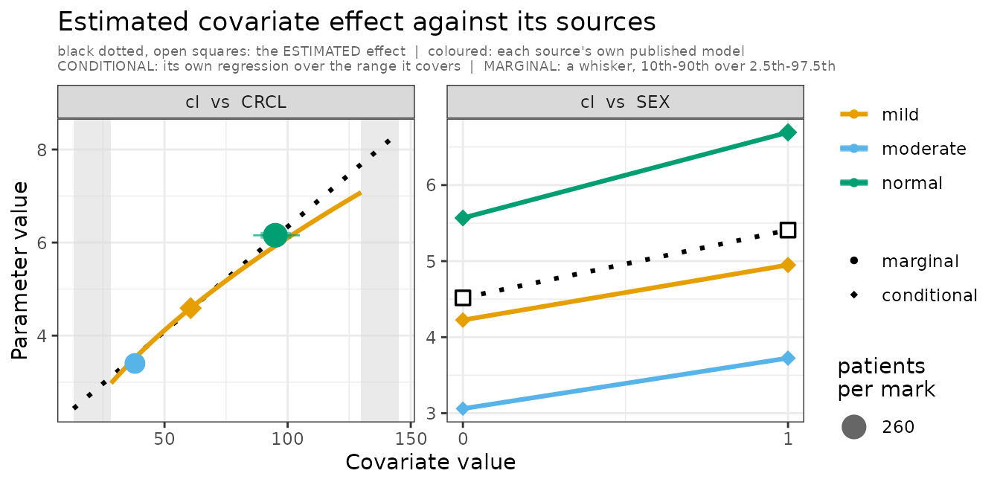
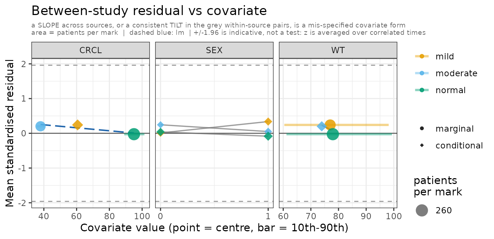
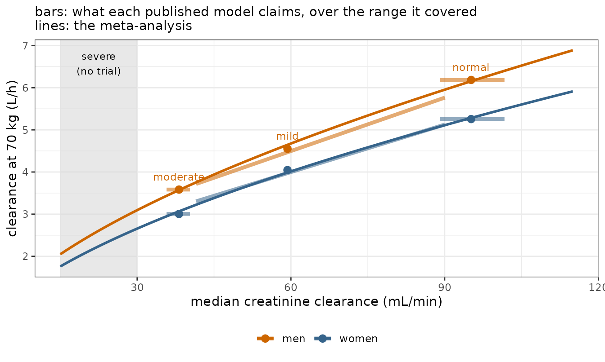

The question
A woman with a creatinine clearance of 21 mL/min needs a dose. Three trials have been published. Two of the three fitted no renal effect — they enrolled narrow ranges of renal function, so within those trials the effect is invisible, absorbed into each paper’s clearance. The third enrolled across renal function and did estimate it.
So the evidence arrives in two different shapes, and admixr2 has to take both: one paper that reports a renal relationship, and two that report only the renal function of the patients they happened to enrol — a contrast visible only between them.
Three papers
Simulated so there is a truth to check against. Three trials, three investigators, three models that share a drug and nothing else. Sato and Ito enrolled narrow renal ranges and fitted no renal term; Khan enrolled across renal function and fitted one.
| cohort | median_CRCL | CL_at_70kg | V_at_70kg | sex_effect |
|---|---|---|---|---|
| normal | 95 | 5.136 | 50.037 | 0.184 |
| mild | 59 | 4.926 | 49.984 | 0.158 |
| moderate | 38 | 2.938 | 50.005 | 0.196 |
Clearance falls with renal function across the three papers. Only Khan’s has a renal parameter to say so with; in the other two the effect is buried in the clearance each reports.
Giving admixr2 the papers
A study is a transcription of what a paper reports: its model at its published values, and the population it enrolled. Note the difference between the three sources, because it is the distinction the whole method turns on:
-
normalandmoderateestimated no renal effect, soCRCLis marginal for them: they describe the patients they enrolled and admixr2 integrates over that. There is no contrast in either paper to condition on, and splitting one on a covariate its model never saw would manufacture evidence. -
milddoes estimate it, soCRCLis conditional for that source and the paper can be read at values of it.
None of that is declared. admixr2 reads each source’s own model and works it out, which is why all three calls above are identical.
The test is ESTIMATED, not merely read. All three models carry
weight, two of them at the conventional fixed exponent
(WT/70)^0.75 — and a fixed exponent is an assumption rather
than a finding, so for those two WT is marginal too. Only
moderate, which fitted its own exponent, is conditional on
it. All three fitted a sex effect, so all three are conditional on sex.
Conditioning is not cosmetic: a covariate every study marginalises over
is not identified against a random effect on the same parameter, and
over 720 replicates the likelihood-ratio test was sized
0.125 against a nominal 0.05 with nothing conditional,
0.058 with all three.
# --- each paper's model ----------------------------------------------------
# The source model is that analyst's own model AT their own published values,
# and a fit already is exactly that: `fit$ui` carries the model together with
# the estimates it converged on. Three different models go in, and nothing has
# to be shared between them.
#
# With a real paper you have no fit object. You write the model out yourself and
# hand admStudy() the printed numbers -- `est = c(tcl = log(5.2), ...)` -- which
# is the same study, transcribed instead of recovered.
sato_published <- fit_normal$ui # normal renal function
ito_published <- fit_moderate$ui # moderate impairment
khan_published <- fit_mild$ui # mild impairment
# --- each paper's study ----------------------------------------------------
normal_study <- admStudy(
model = sato_published,
population = cohorts$normal,
dose = DOSE,
times = TIMES)
moderate_study <- admStudy(
model = ito_published,
population = cohorts$moderate,
dose = DOSE,
times = TIMES)
# IDENTICAL CALL, different consequence. Khan's model uses renal function and
# the other two never mention it, so renal function is CONDITIONAL for this
# source and MARGINAL for them -- and admixr2 reads that off the models. There
# is nothing here to say it with.
mild_study <- admStudy(
model = khan_published,
population = cohorts$mild,
dose = DOSE,
times = TIMES)
studies <- admStudies(normal = normal_study,
moderate = moderate_study,
mild = mild_study)
# the three papers together, used by the figures further down
published <- list(normal = normal_paper, mild = mild_paper,
moderate = moderate_paper)
studies
#> admixr2 studies: 3 (3 published models, 0 digitised)
#> normal model n = 260 7 times
#> moderate model n = 180 7 times
#> mild model n = 210 7 times
#>
#> covariate normal moderate mild
#> WT marginal conditionalmarginal
#> CRCL marginal marginal conditional
#> SEX conditionalconditionalconditional
#>
#> NOTE: 'normal', 'moderate', 'mild' contribute as published MODELS, weighted as if `n` patients had been sampled -- `n` sets RELATIVE WEIGHT against the other studies, not precision. No standard error is reported for a fit that includes one.
#>
#> print() a single study to check its transcription.Pooling them
adm_model <- function() {
ini({
tcl <- log(4)
tv <- log(45)
bcrcl <- 0.3 # the renal effect no published model has
bsex <- 0.10
add.err <- 0.1
eta.cl ~ 0.1
})
model({
cl <- exp(tcl + eta.cl) * (WT/70)^0.75 * (CRCL/90)^bcrcl * exp(bsex * SEX)
v <- exp(tv) * (WT/70)
cp <- linCmt()
cp ~ add(add.err)
})
}
fit <- nlmixr2(adm_model, admData(), est = "adgh",
control = adghControl(studies = studies, print = 0L))
#>
#>
#>
pf <- fit$parFixedDf
stopifnot(abs(pf["bsex", "Estimate"] - BSEX) < 0.08)
# NO INTERVALS HERE, and that is the point: every study in this vignette is a
# published model rather than a sample, so there is no sampling law to build one
# from and admixr2 reports no standard error at all. The estimates are what the
# three papers jointly imply; whether the renal effect is real is settled by the
# likelihood-ratio test below, which needs no standard error.
knitr::kable(data.frame(
parameter = c("CL at 70 kg, CRCL 90, women (L/h)", "V at 70 kg (L)",
"renal exponent", "sex effect (log)", "additive SD (mg/L)",
"omega (eta.cl)"),
truth = c(CL70, V70, BCRCL, BSEX, SD_ADD, OM_CL),
estimate = c(pf["tcl", "Back-transformed"], pf["tv", "Back-transformed"],
pf["bcrcl", "Back-transformed"], pf["bsex", "Back-transformed"],
pf["add.err", "Back-transformed"],
as.numeric(fit$omega[1L, 1L]))),
digits = 3, row.names = FALSE,
caption = "Recovered from three analyses, none of which contained a renal term.")| parameter | truth | estimate |
|---|---|---|
| CL at 70 kg, CRCL 90, women (L/h) | 5.00 | 4.987 |
| V at 70 kg (L) | 50.00 | 50.060 |
| renal exponent | 0.60 | 0.591 |
| sex effect (log) | 0.18 | 0.180 |
| additive SD (mg/L) | 0.08 | 0.080 |
| omega (eta.cl) | 0.05 | 0.065 |
The renal exponent comes back at 0.59 against a truth of 0.6, out of three analyses only one of which contained a renal term — and that one put it at 0.57. There are no intervals: every source here is a published model rather than a sample, so there is no sampling law to build one from and admixr2 reports no standard error at all.
The sex effect shows what pooling costs. The three trials reported 0.18, 0.16, 0.20 for a quantity genuinely identical in all three; sampling noise alone put them that far apart. Reconciling that is not free — some of it lands in the other parameters, which is why the renal exponent comes back a little below its truth.
Is the shape right?
Three cohorts at three renal medians settle that renal
function matters. They do not settle what shape it has.
The fitted model uses a power, (CRCL/90)^bcrcl, which is
what generated the cohorts. Fit the obvious alternative — linear in
CRCL — to the same sources.
adm_model_lin <- function() {
ini({
tcl <- log(4)
tv <- log(45)
bcrcl <- 0.3
bsex <- 0.10
add.err <- 0.1
eta.cl ~ 0.1
})
model({
# LINEAR in CRCL where the truth is a power -- same parameter count, so
# there is no likelihood-ratio test to appeal to.
cl <- exp(tcl + eta.cl) * (WT/70)^0.75 *
(1 + bcrcl * (CRCL/90 - 1)) * exp(bsex * SEX)
v <- exp(tv) * (WT/70)
cp <- linCmt()
cp ~ add(add.err)
})
}
fit_lin <- nlmixr2(adm_model_lin, admData(), est = "adgh",
control = adghControl(studies = studies, print = 0L))
#>
#>
#> Both models have the same number of parameters, so there is no likelihood-ratio test to appeal to. All that is left is the objective, and it decides nothing:
| form | objective | bcrcl |
|---|---|---|
| power (correct) | -13334.16 | 0.59 |
| linear | -13331.38 | 0.69 |
#> dOFV (linear - power) = +2.78 on 0 extra parametersThe plot decides it.
plots_lin <- plot(fit_lin, which = "covariate")
Between-study residual, linear model. The CRCL facet bends.

Between-study residual, linear model. The CRCL facet bends.
Three facets, and only one of them can say anything.
CRCL separates the sources cleanly. SEX is
conditional, so each source contributes a pair and the grey line joining
them is the within-source contrast conditioning bought. WT
is the negative case: the three cohorts enrolled median weights of 75,
77, 78 kg, so they sit on top of one another and the facet cannot speak
to weight whichever way it tips.
Note also that a mark’s size is the patients it speaks for, and that
follows the facet: on SEX each mark is one sex stratum, on
CRCL the strata are together and each mark is a whole
paper.
A missing covariate shows up as a slope across the
axis. A covariate with the wrong shape shows up as
curvature — the linear model buys both ends by
inflating bcrcl to 0.69, and then misses the middle. Mean
standardised residual by source, in order of increasing
CRCL (38, 59, 95 mL/min):
| form | moderate | mild | normal |
|---|---|---|---|
| power (correct) | +0.15 | +0.36 | +0.17 |
| linear | +0.20 | +0.25 | +0.26 |
The linear row is a U: both extremes above zero, the middle pulled to zero. The power row has no such shape.
Read the magnitudes with care. Every source here is a published
model, so its E and V are exact
functions of that model’s parameters rather than a sample; there is no
sampling noise for a residual to be large against, and these never
approach ±1.96. The pattern is the evidence, not the
size.
admMoments() returns the moments the panels are drawn
from if you want to draw your own; see
vignette("diagnostic-plots").
Seeing the renal effect
What the meta-analysis actually did. Sato’s and Ito’s models are flat bars — no renal term, so each claims one clearance over the whole range it covered. Khan’s has a slope of its own. The meta-analysis is the line through all three.

The slope is the renal effect, recovered from three sources that each had none. The vertical gap between the two lines is the sex effect. The grey band is where the patient is, and no trial went there.
The dose
| basis | dose_mg |
|---|---|
| the truth | 76 |
| meta-analysis (admixr2) | 77 |
| nearest published model | 187 |
The nearest published model has no renal term, so it cannot adjust for her at all: it hands back the dose it was fitted at, for a cohort whose median renal function was 1.8 times hers. The meta-analysis lands within 1 mg of the truth, from three papers only one of which had a renal term to contribute.
See also
- Diagnostic plots — what each panel is for
- Multiple studies